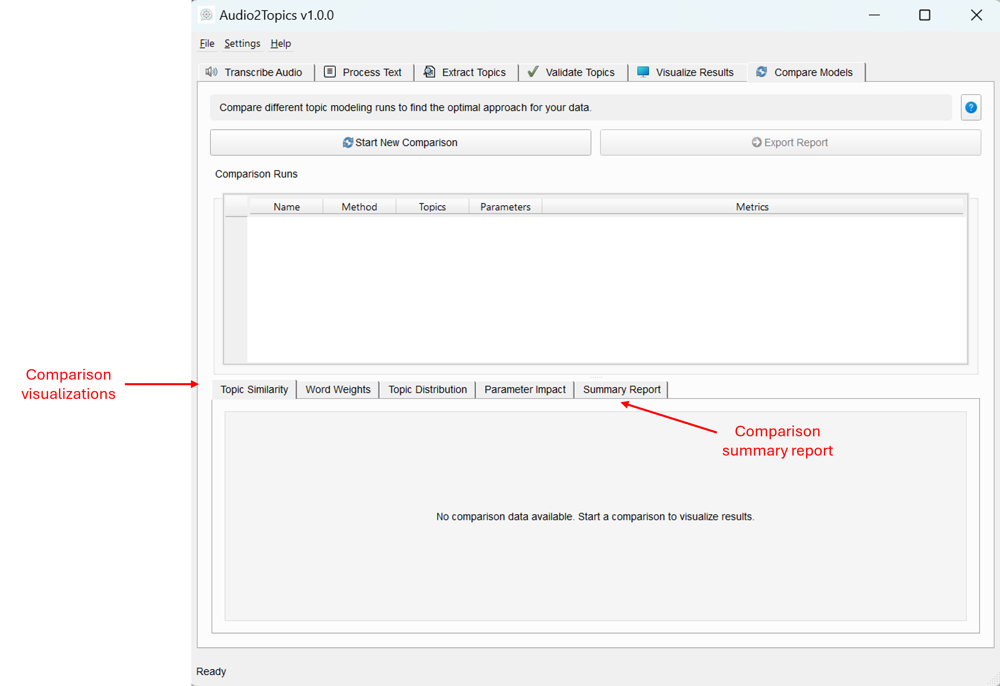
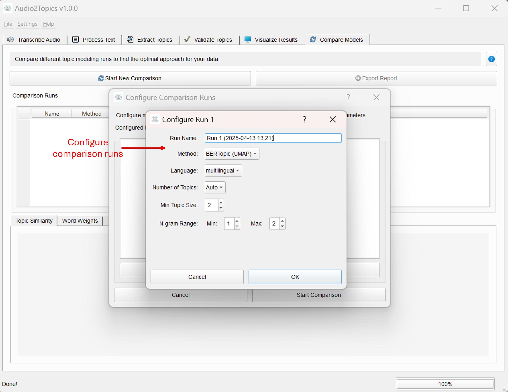

Topic Model Comparison Module
Overview
The Topic Model Comparison module enables you to run and evaluate multiple topic modeling approaches side by side, helping identify the optimal method and parameters for your specific data. This experimental approach takes the guesswork out of topic modeling by quantitatively measuring how different algorithms and settings perform on the same dataset.
This module allows you to: - Configure and run multiple topic modeling methods with different parameters - Visualize similarities and differences between topic models - Compare topic coherence, distinctiveness, and distribution - Analyze how parameter changes affect topic quality - Generate detailed reports with findings and recommendations - Export comparison results for documentation and sharing
By systematically comparing approaches, you can make data-driven decisions about which topic modeling method will best reveal the underlying themes in your documents.
Main interface of the Comparison Tab  
Core Components
ComparisonTab Class
The ComparisonTab class is the main UI component that manages the comparison process, visualizations, and reporting.
Key Methods
| Method | Description |
|---|---|
start_comparison() |
Launches the comparison configuration dialog and initiates the process |
execute_runs() |
Manages the execution of multiple topic model runs in sequence |
generate_visualizations() |
Creates all comparison visualizations when runs are complete |
generate_summary_report() |
Creates a detailed analysis of the comparison with recommendations |
export_report() |
Exports the comparison results in HTML or Markdown format |
TopicModelRun Class
The TopicModelRun class stores all information about a single topic modeling run, including its configuration, results, and metrics.
Properties
| Property | Description |
|---|---|
name |
User-defined name for the run |
method |
Topic modeling method used (BERTopic, NMF, LDA, etc.) |
parameters |
Configuration parameters used for the run |
documents |
Documents processed in this run |
topics |
Topic assignments for each document |
topic_words |
Words and their weights for each topic |
metrics |
Quality metrics calculated for this run |
timestamp |
When the run was executed |
Helper Dialogs
- RunConfigDialog: UI for configuring a single topic model run
- ComparisonRunDialog: UI for setting up multiple runs to compare
- ElbowMethodDialog: Interactive tool for finding optimal LDA topic counts
User Interface
The Comparison Tab provides a comprehensive interface for setting up, visualizing, and analyzing multiple topic model runs.
UI Components
- Control Buttons:
- "Start New Comparison" button to configure and run a new comparison
-
"Export Report" button to export comparison results
-
Run Selection Table:
- Displays all completed runs with their methods, parameters, and metrics
-
Allows selection of specific runs for detailed comparison
-
Visualization Tabs:
- Topic Similarity: Heatmap showing relationship between topics across runs
- Word Weights: Comparison of word importance in similar topics
- Topic Distribution: Chart showing document distribution across topics
- Parameter Impact: Analysis of how parameters affect topic quality
- Summary Report: Detailed analysis with findings and recommendations
Usage Guide
Starting a Comparison
- Ensure you have documents loaded in the application
- Click the "Start New Comparison" button
- In the dialog that appears, click "Add Run" to configure your first run
- For each run:
- Provide a descriptive name
- Select a topic modeling method
- Configure parameters (number of topics, min topic size, etc.)
- Click OK to add the run to the comparison
- Add 2-5 runs with different methods or parameters
- Click "Start Comparison" to begin processing
Run Configuration Options
When configuring each run, you can adjust these key parameters:
- Method:
- BERTopic (UMAP): High-quality semantic topics using BERT embeddings
- BERTopic (PCA): More stable BERTopic variant using PCA
- NMF: Non-negative Matrix Factorization for traditional topic modeling
-
LDA: Latent Dirichlet Allocation, a probabilistic approach
-
Language: Select the primary language of your documents
- Number of Topics: Set a specific number or choose "Auto"
- Min Topic Size: Minimum documents required to form a topic
- N-gram Range: Whether to include phrases (2+ words) in topics
For LDA models, additional options are available: - Elbow Method: Automatically find the optimal number of topics - Min/Max Topics: Range to search for the optimal topic count - Step Size: Granularity of the topic count search
Understanding Visualizations
Topic Similarity Heatmap
This visualization shows how topics from different runs relate to each other: - Each cell represents similarity between two topics (from same or different runs) - Darker colors indicate higher similarity - Helps identify consistent topics that appear across multiple methods - Shows which topics are method-specific versus universal in your data
Word Weights Comparison
Compares word importance between similar topics across different runs: - Select a topic to see how its top words compare to similar topics in other runs - Bar height shows word importance (weight) in each topic - Helps evaluate topic coherence and specificity across methods - Reveals semantic differences in how methods interpret similar concepts
Topic Distribution Chart
Shows how documents are distributed across topics in different runs: - Compares distribution balance between methods - Identifies methods that produce more evenly distributed topics - Shows if some methods create "catch-all" topics or many small topics - Helps evaluate coverage and granularity of different approaches
Parameter Impact Chart
Visualizes how changing parameters affects topic quality: - Scatter plot showing relationship between number of topics and topic quality - Points colored by method to compare different approaches - Helps identify optimal parameter settings for your data - Reveals how methods scale with different parameter values
Interpreting the Summary Report
The Summary Report provides a comprehensive analysis of your comparison, including:
- Run Summary: Overview of all runs with their key metrics
- Top Topic Words: The most important words for each topic across all runs
- Recommendations: Data-driven suggestions for optimal methods and parameters
- Method Analysis: Comparative strengths and weaknesses of different approaches
- Parameter Recommendations: Guidance on ideal parameter values for your data
Recommendations Methodology
The report uses several metrics to identify the best approach:
- Optimal Number of Topics: Based on the average number of meaningful topics found across all runs
- Best Method: Typically the run with highest topic coherence and balanced distribution
- N-gram Setting: Based on which n-gram range produces most distinctive topics
- Topic Size Threshold: Determined by analyzing distribution balance
Exporting Comparison Results
- Click the "Export Report" button
- Choose a format:
- HTML: Rich formatting with tables and styling, ideal for sharing
- Markdown: Plain text with formatting, good for documentation
- Select a save location and filename
- The exported report contains:
- All run configurations and their results
- Top words for each topic across all runs
- Analysis and recommendations
- Summary metrics and charts
Best Practices
Effective Comparison Strategy
- Vary one parameter at a time to isolate its impact
- Include diverse methods to get different perspectives on your data
- Use descriptive run names to easily identify them in visualizations
- Test a range of topic numbers to find the optimal granularity
- Compare results with domain knowledge to validate topic quality
When to Use Each Method
- BERTopic (UMAP): Best for semantic understanding, works well with medium-sized datasets
- BERTopic (PCA): Good alternative when UMAP is unstable with small datasets
- NMF: Fast, deterministic results; good for clearly distinct topics
- LDA: Works well with longer documents; provides probabilistic topic assignments
Identifying the Best Model
The "best" topic model depends on your specific goals:
- For exploration: Prioritize coherence and interpretability
- For document organization: Look for balanced distribution and clear separation
- For content analysis: Focus on specific, meaningful topics
- For classification: Emphasize predictive power and coverage
Common Pitfalls to Avoid
- Relying on a single metric: Consider multiple aspects of topic quality
- Overlooking preprocessing impact: Document cleaning affects all models
- Assuming more topics means better results: Quality often peaks at a moderate number
- Neglecting outlier topics: Check how many documents lack clear topic assignments
- Focusing only on top words: Consider full topic coherence and document assignments
Advanced Usage
Customizing the Comparison Process
- Run a focused sub-comparison on the most promising methods
- Try different preprocessing approaches to see their impact on topic quality
- Combine insights from multiple models for more robust topic identification
- Compare stability by running the same configuration on different document subsets
Handling Special Cases
Very Small Document Sets
- Focus on NMF and LDA which are more stable with few documents
- Use topic_size=1 to allow single-document topics
- Consider document chunking to increase document count
Multi-Language Corpora
- Use "multilingual" setting for mixed-language document sets
- Compare language-specific versus multilingual models
- Check topic distribution to ensure fair representation across languages
Domain-Specific Content
- Pay special attention to technical terminology in topic words
- Adjust min_df and max_df in NMF/LDA to handle specialized vocabulary
- Compare with domain expert assessment for topic quality validation